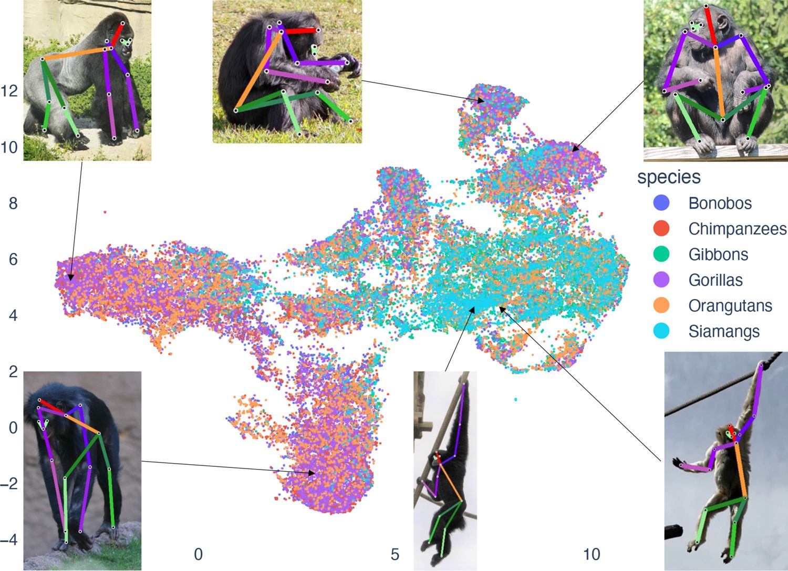
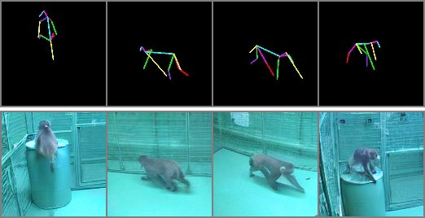
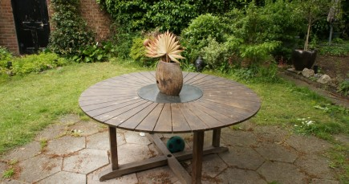
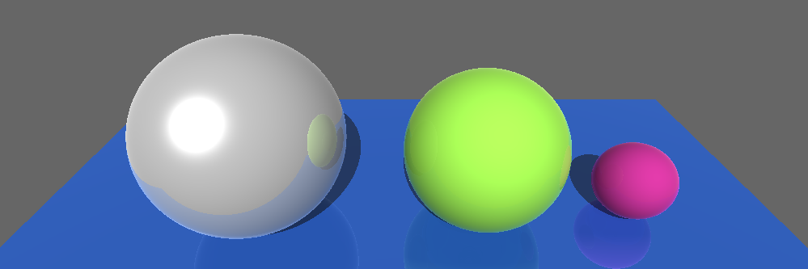
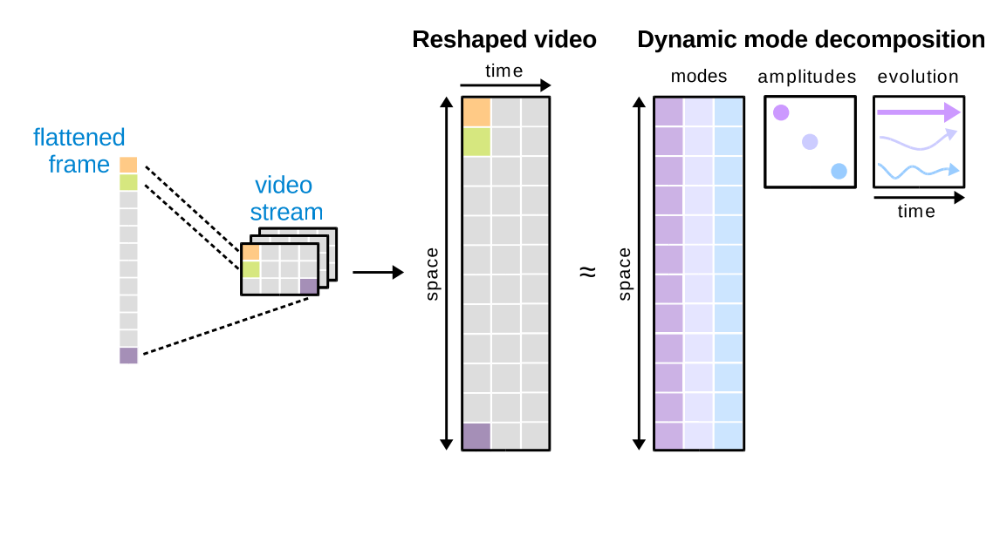

Research

Learning to Forecast Domain-Aware 3D Body Motion
Developed a self-supervised framework for predicting 3D body motion from monocular video without
3D annotations. Combines spatiotemporal transformers with a latent diffusion model for realistic
long-term motion forecasting. Conditions generation on domain context derived from the input video
to improve out-of-distribution generalization.

OpenApePose
Released a large-scale public dataset of 71,868 annotated photographs of six non-human ape species in naturalistic contexts, with 16 body landmarks per image. Demonstrated that models trained on species-specific data substantially outperform those trained on monkey or human datasets for ape pose tracking.

Self-supervised Secondary Landmark Detection
Developed a self-supervised method using 3D representation learning and contrastive learning to
detect anatomically consistent secondary landmarks without manual annotation. Validated
generalization across species including macaques, humans, and flies.

OpenMonkeyChallenge
Designed and released a large-scale benchmark for articulated body pose estimation across diverse
primate subjects in naturalistic conditions. Dataset contains 111,529 annotated images with
17 body landmarks.
OpenMonkeyStudio
Engineered a 62-camera markerless motion capture system for high-fidelity 3D body tracking in
unconstrained environments. Built a public dataset of 195,228 annotated pose frames across diverse
motion sequences. Released as an open benchmark supporting research in 3D body reconstruction
and behavior analysis.
Tools
Pose Keypoint Visualizer
A browser-based 3D pose keypoint viewer built with Three.js. Supports drag-and-drop JSON and NPY files, animated frame-by-frame playback, skeletal connections via adjacency matrix, motion trails, joint labels, and Bloom post-processing. Includes pre-built adjacency files for COCO 17-joint human and macaque skeletons.
Note: the online version supports JSON files only. NPY conversion requires running the tool locally.
Selected Projects

CLIP-Guided Pose-Conditioned Image Generation
Fine-tuned Stable Diffusion via ControlNet on 80,000 pose images using CLIP text conditioning
and 2D pose control signals. Pose transfer generalized well across appearances; facial feature
fidelity identified as a key failure mode.

3D Scene Reconstruction via Gaussian Splatting
Built a video-to-3D reconstruction pipeline using COLMAP and Gaussian Splatting from turntable
sequences. Enables interactive neural rendering and scene-level optimization.

Ray Tracer
Implemented a physically-based ray tracer from scratch simulating light transport including
shadows, reflections, and refractions on 3D surfaces.
Robot Goalie
Designed a system for a Baxter robot to track, predict, and intercept a thrown ball in real time using a Kinect camera. Computed 3D coordinates using depth and pixel data and implemented motion planning for accurate interception.
Recovering 3D Pose from Neural Signals
Predicted 3D body pose from Local Field Potential signals, demonstrating cross-modal
representation learning between neural activity and physical motion.

Dynamic Mode Decomposition via CUDA
Implemented DMD for foreground/background separation in video using CUDA C, achieving 5x
speedup over MATLAB on GPU through optimized matrix operations.